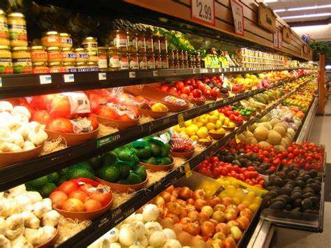
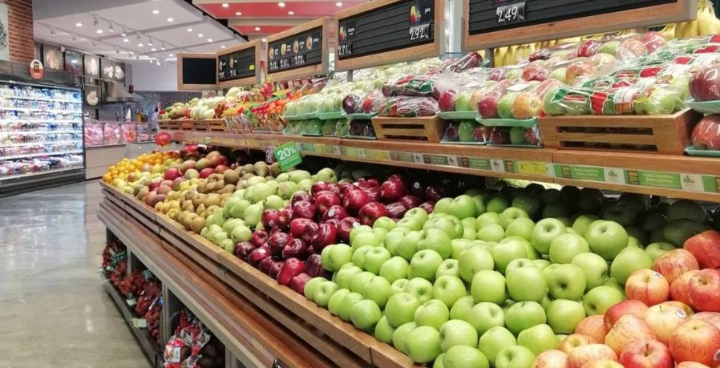

¿Cuántas veces has escuchado decir que una dieta equilibrada ayuda a prevenir enfermedades? Esto es totalmente cierto, nuestro cuerpo requiere de mucho cuidado y de una gran cantidad de nutrientes para realizar sus funciones metabólicas básicas. Estos nutrientes se obtienen fácilmente al consumir alimentos no procesados. Ayúdale a tu cuerpo a mantenerse sano.
Una alimentación variada y balanceada te ayudará a controlar la presión arterial, reducir niveles elevados de colesterol, atrasar el deterioro cognitivo y junto con la práctica de actividad física, ayuda también a prevenir enfermedades crónicas como la diabetes al tiempo que mejora la calidad de vida en general.
Encontraras los mejores productos fresos y de gran calidad, sabor y sanidad

Eficiente en sanidad, servicio de caldiad, variedad de productos
Excelente atencion al cliente, gran variedad y seguridad

Una alimentación variada y balanceada te ayudará a controlar la presión arterial, reducir niveles elevados de colesterol, atrasar el deterioro cognitivo y junto con la práctica de actividad física, ayuda también a prevenir enfermedades crónicas como la diabetes al tiempo que mejora la calidad de vida en general.
Mientras más saludable sea tu alimentación, mayor energía obtendrás para realizar tus labores diarias. Planea tus comidas para que siempre incluyan alimentos sanos y nutritivos.
Este es uno de los beneficios que más pasamos por alto en relación con una dieta balanceada. La alimentación tiene una fuerte influencia en la salud mental. La dieta no sólo te proporciona la energía necesaria para vivir sino que también te aporta nutrientes tales como ácidos grasos Omega-3, aminoácidos esenciales, vitaminas (ácido fólico, B12 y D) y minerales como el zinc, el magnesio y el hierro, nutrientes esenciales para el óptimo funcionamiento del cerebro.